Анатомія рослин: тканини
Будова і функції шести груп рослинних тканин на інтерактивних моделях зрізів: наведіть курсор на тканину, щоб її підсвітити, і розгляньте клітини зблизька.
Тканина — це група клітин, подібних за походженням, будовою та функціями, разом із продуктами їхньої життєдіяльності (у рослин це передусім клітинні стінки). За основною функцією рослинні тканини поділяють на шість груп: твірні, покривні, основні, провідні, механічні та видільні.
Усі тканини на одному зрізі
Схема поперечного зрізу молодого стебла соняшнику (Helianthus annuus). Наведіть курсор на назву тканини або на сам зріз — відповідні клітини буде виділено.
Як побудовано модель. Положення клітин задано пуассонівським дисковим розподілом зі змінною густиною (у камбії й ксилемі клітини дрібні, у серцевині — великі), а форма клітин — зваженою діаграмою Вороного. Товщина стінок — внутрішній відступ кожного многокутника. Така проста модель дає реалістичну мозаїку щільно зімкнутих клітин.
Під мікроскопом

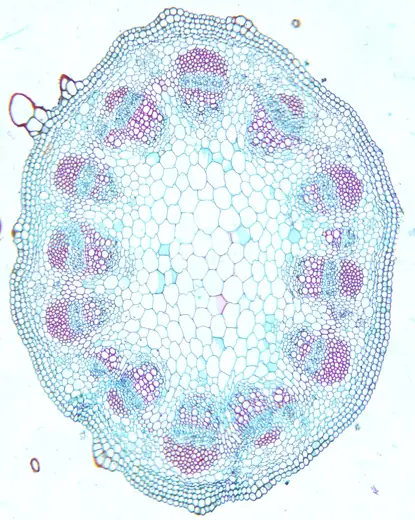

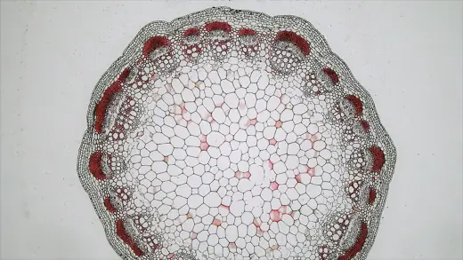

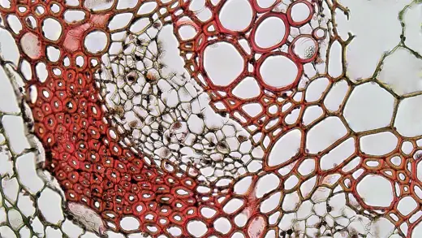
Твірні тканини (меристеми)
Меристеми (від грец. meristos — подільний) забезпечують безперервний ріст рослини та формування нових органів завдяки постійному поділу клітин. Рослина росте впродовж усього життя (відкритий ріст), бо в ній зберігаються ініціальні клітини, що діляться необмежено; їхні нащадки поступово диференціюються в постійні тканини. Клітини меристем дрібні, ізодіаметричні, щільно зімкнуті, без міжклітинників, з тонкими первинними стінками, великим ядром, густою цитоплазмою та дрібними вакуолями.
Загальна будоваМеристематичні клітини
Головна функція меристеми — мітотичний поділ. Перед поділом клітина подвоює ДНК, далі проходить профазу, метафазу, анафазу і телофазу; між дочірніми ядрами утворюється клітинна пластинка — майбутня стінка. Через щільну цитоплазму та великі ядра меристема на препаратах інтенсивно забарвлюється.
- Клітини
- живі, дрібні, ядро займає до половини об'єму
- Стінки
- тонкі, первинні, целюлозні
Під мікроскопом

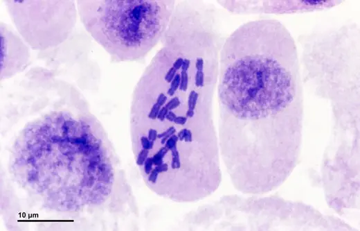

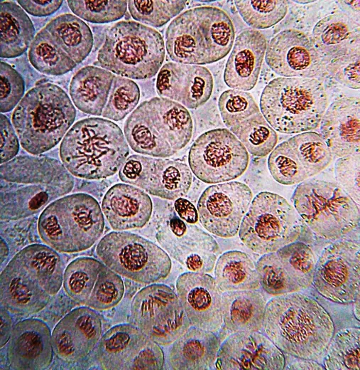

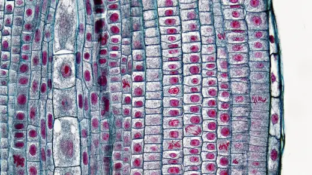
1.1Апікальні (верхівкові)
Апікальні меристеми знаходяться на верхівках пагонів (конус наростання) та кінчиках коренів і забезпечують ріст органів у довжину — первинний ріст. Вони дають початок усім первинним тканинам: з протодерми утворюється епідерма, з прокамбію — первинні провідні тканини, з основної меристеми — паренхіма. Конус наростання пагона закладає листкові зачатки та бруньки, а меристема кореня захищена кореневим чохликом, клітини якого постійно злущуються й відновлюються.
- Де
- конус наростання пагона, кінчик кореня
- Ріст
- у довжину (первинний)
Під мікроскопом

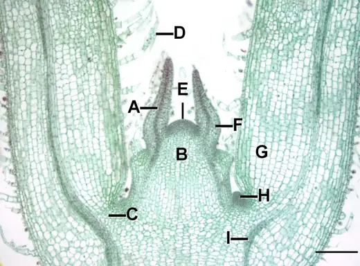

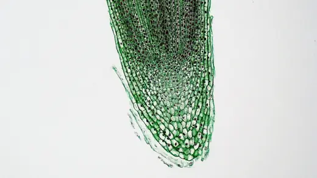
1.2Латеральні (бічні)
Латеральні меристеми — камбій і фелоген — утворюють циліндри, паралельні поверхні стебла й кореня, та відповідають за вторинний ріст (потовщення). Камбій відкладає всередину вторинну ксилему (деревину), а назовні — вторинну флоему (луб); через сезонність його роботи в деревині утворюються річні кільця. Фелоген (корковий камбій) виникає в периферичних шарах і будує перидерму: назовні — корок, всередину — фелодерму. Бічні меристеми характерні для голонасінних і дводольних; у більшості однодольних камбію немає.
- Де
- між лубом і деревиною; під поверхнею органа
- Ріст
- у товщину (вторинний)
Під мікроскопом

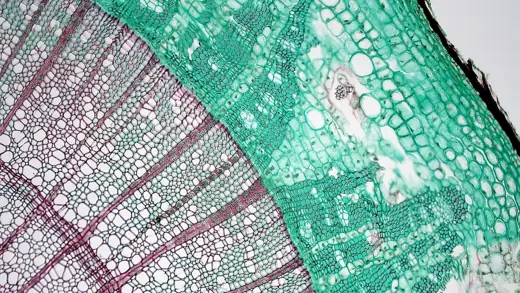

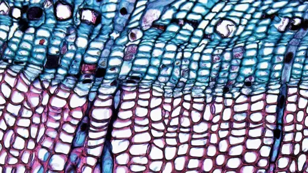

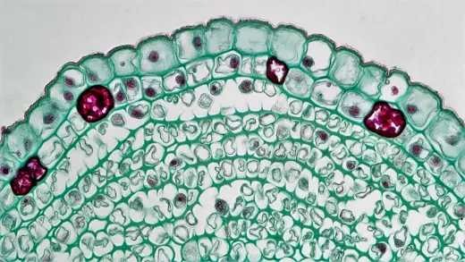
1.3Інтеркалярні (вставні)
Інтеркалярні меристеми — ділянки твірної тканини, що залишилися між уже диференційованими тканинами: в основі міжвузлів, листкових піхв, черешків. Вони забезпечують швидкий вставний ріст стебла злаків і хвощів одночасно в багатьох міжвузлях, а також відростання листків трав після скошування чи випасання. Ці меристеми тимчасові — з часом повністю перетворюються на постійні тканини. Ніжну зону поділу захищає листкова піхва.
- Де
- основи міжвузлів (злаки, хвощі), основи листків
- Ріст
- вставний, швидкий, тимчасовий
1.4Раневі
Раневі (травматичні) меристеми утворюються в місцях пошкоджень: живі клітини паренхіми поблизу рани дедиференціюються і знову починають ділитися. Вони утворюють калюс — пухку масу паренхімних клітин, що закриває рану, а згодом під ним формується раньова перидерма, яка ізолює пошкоджене місце від висихання та інфекції. Здатність до утворення калюсу використовують у щепленні, живцюванні та в культурі тканин in vitro.
- Де
- краї ран, місця зрізів, щеплень
- Утворює
- калюс, раньову перидерму
Під мікроскопом

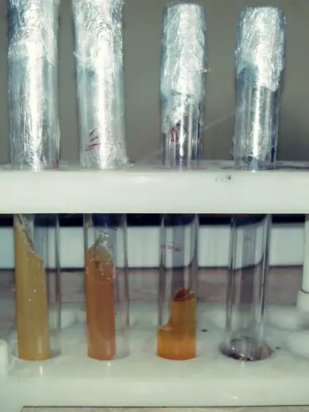
Покривні тканини
Покривні тканини розташовані на межі рослини та довкілля. Вони захищають внутрішні структури від висихання, перегрівання, механічних пошкоджень і патогенів, а також регулюють газообмін і транспірацію. За походженням розрізняють первинну (епідерма), вторинну (перидерма) та третинну (кірка) покривні тканини.
2.1 · первиннаЕпідерма (шкірка)
Епідерма — первинна жива тканина, що утворюється з протодерми. Зазвичай це один шар щільно зімкнутих клітин без міжклітинників; їхні зовнішні стінки потовщені й вкриті кутикулою — шаром кутину та воску, що зменшує випаровування. Газообмін і транспірацію регулюють продихи: дві бобоподібні замикаючі клітини з хлоропластами змінюють тургор і відкривають чи закривають продихову щілину. Похідні епідерми — волоски (трихоми) — відбивають світло, зменшують втрати води, захищають від тварин або виділяють секрети. Епідерма вкриває листки та молоді пагони.
- Клітини
- живі, один шар, без хлоропластів (крім замикаючих)
- Структури
- кутикула, продихи, трихоми
Під мікроскопом

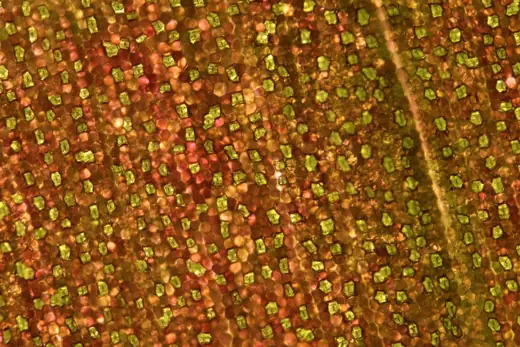

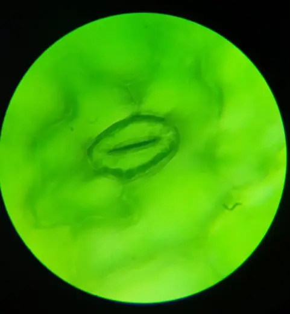

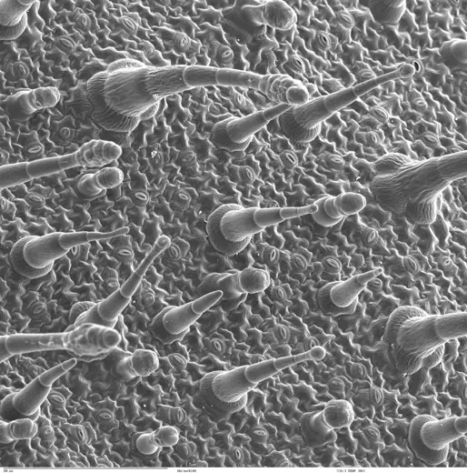
2.2 · вториннаПеридерма (корок)
Перидерма замінює епідерму на стеблах і коренях деревних рослин, коли ті починають потовщуватися. Вона складається з фелогену (коркового камбію), корку (фелеми) назовні та фелодерми всередину. Клітини корку щільно прилягають одна до одної, їхні стінки просочуються суберином, і клітини відмирають, заповнюючись повітрям, — тому корок непроникний для води й газів і добре захищає від перепадів температури. Газообмін через перидерму відбувається через сочевички — горбочки з пухкої виповнювальної тканини з великими міжклітинниками.
- Клітини
- корок — мертві; фелоген і фелодерма — живі
- Газообмін
- через сочевички
Під мікроскопом

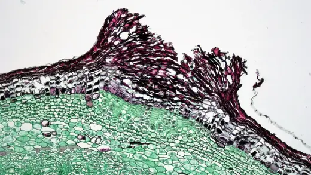

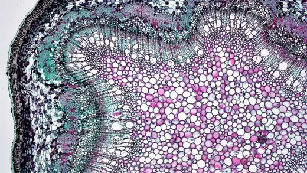
2.3 · третиннаКірка (ритидом)
Кірка — зовнішній шар кори старих дерев. Фелоген щоразу закладається глибше, і всі тканини назовні від нового шару корку (частини лубу і кори) позбавляються води та поживних речовин і відмирають. Так формується потужний комплекс відмерлих шарів перидерми й лубу, що захищає стовбур від механічних ушкоджень, перепадів температури і навіть низових пожеж. Кірка не здатна розтягуватися, тому з ростом стовбура в товщину вона розтріскується (дуб, сосна) або злущується пластинками (платан).
- Клітини
- мертві
- Приклади
- дуб, сосна, модрина, платан
На фото

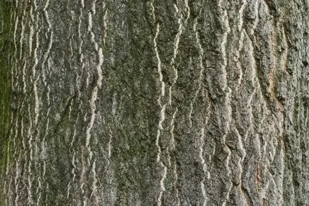

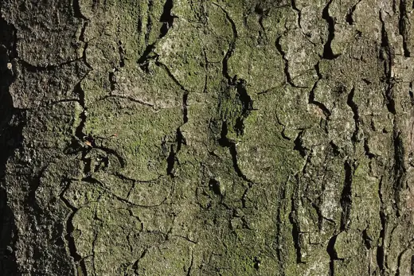

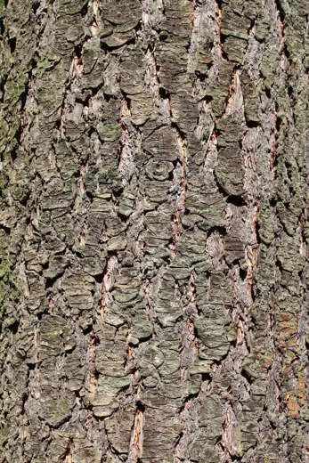
Основні тканини (паренхіма)
Паренхіма складає основну масу тіла рослини і заповнює проміжки між іншими тканинами: м'якуш листка, первинну кору, серцевину, м'якуш плодів, запасні органи. Її клітини живі, переважно ізодіаметричні, з тонкими целюлозними стінками та міжклітинниками. Паренхіма зберігає здатність до дедиференціації — за потреби може знову стати меристемою.
3.1Асиміляційна (хлоренхіма)
Хлоренхіма містить численні хлоропласти; її головна функція — фотосинтез. У листку дводольних вона поділяється на стовпчасту (палісадну) — витягнуті, щільно розміщені клітини під верхньою епідермою, де фотосинтез найінтенсивніший, — і губчасту з пухко розміщеними клітинами та великими міжклітинниками. Через міжклітинники від продихів до клітин надходить CO₂, а назовні виходять O₂ і водяна пара. Хлоренхіма є також у первинній корі молодих стебел.
- Клітини
- живі, з хлоропластами
- Де
- м'якуш (мезофіл) листка, кора молодих стебел
Під мікроскопом

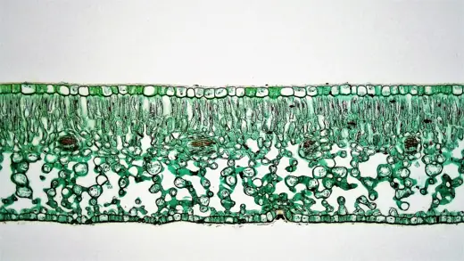

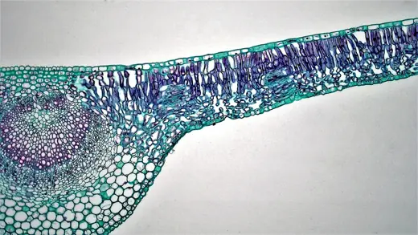

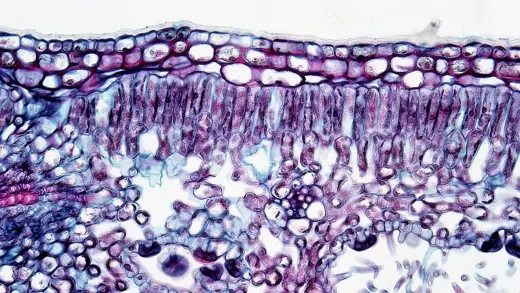
3.2Запасаюча
Запасаюча паренхіма накопичує поживні речовини, що утворюються в надлишку: крохмаль (у вигляді крохмальних зерен в амілопластах), інулін, білки (алейронові зерна), жири й олії, цукри. Вона розташована в бульбах, кореневищах, цибулинах, коренеплодах, насінні та в серцевині стебел. Запаси використовуються під час проростання, весняного відростання, утворення квіток і плодів. Крохмальні зерна мають шарувату будову навколо утворювального центру й забарвлюються розчином йоду в синьо-фіолетовий колір.
- Де
- бульби (картопля), кореневища, цибулини, насіння
- Речовини
- крохмаль, інулін, білки, жири
Під мікроскопом

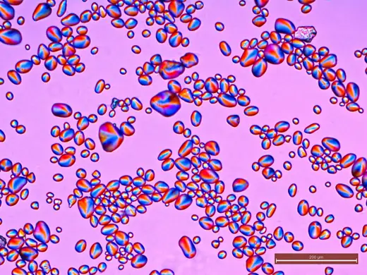

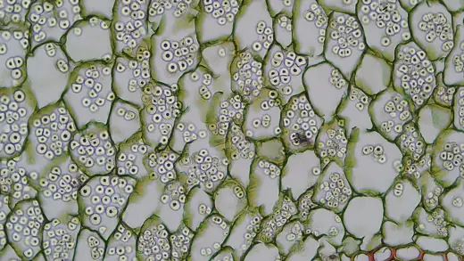

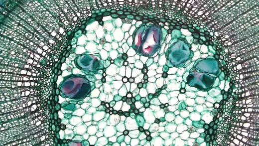
3.3Водоносна та повітроносна
Водоносна паренхіма складається з великих тонкостінних клітин з об'ємними вакуолями, що запасають воду, часто зв'язану слизом; вона розвинена в листках і стеблах сукулентів (алое, агава, кактуси) та дає змогу пережити тривалу посуху. Повітроносна паренхіма (аеренхіма) має великі міжклітинні порожнини, розділені перегородками з одного шару клітин; вона властива водним і болотним рослинам (латаття, рогіз, рис). Аеренхіма забезпечує газообмін — доставку кисню до органів, занурених у воду чи мул, — і надає плавучості листкам та стеблам.
- Водоносна
- алое, агава, кактуси, солянки
- Аеренхіма
- латаття, рогіз, очерет, рис
Під мікроскопом

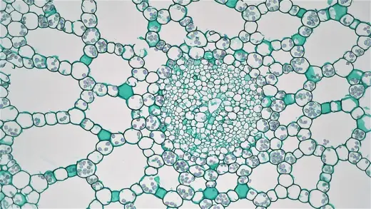

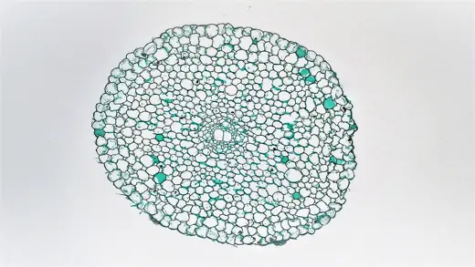
Провідні тканини
Провідні тканини утворюють транспортну систему рослини, що з'єднує всі органи. Ксилема і флоема — складні тканини: крім провідних елементів, у них є механічні волокна та паренхімні клітини. Найчастіше вони об'єднані у провідні пучки (у листках — жилки). У дводольних і голонасінних пучки відкриті — між флоемою та ксилемою є камбій; в однодольних — закриті, без камбію.
Загальна будоваВідкритий колатеральний пучок
У колатеральному пучку флоема лежить ближче до поверхні органа, а ксилема — ближче до центру. Між ними розташований шар камбію, тому такий пучок здатний до вторинного потовщення. Зовні пучок часто вкритий склеренхімною обкладкою, що посилює його міцність.
- Типи пучків
- колатеральні, біколатеральні, концентричні, радіальні
- Приклад
- стебло соняшнику, гарбуза, кульбаби
Під мікроскопом

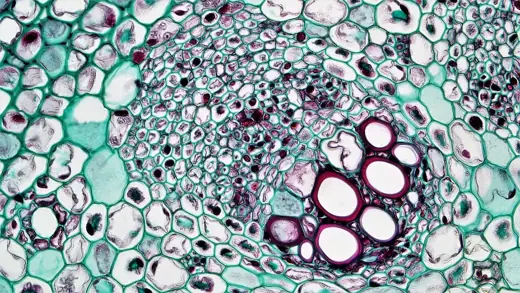

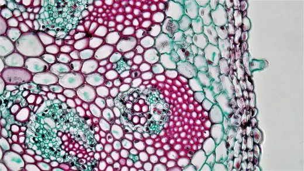

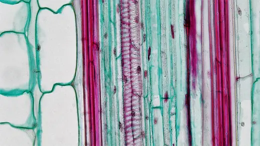
4.1 · висхідна течіяКсилема (деревина)
Ксилема транспортує воду й мінеральні речовини від коренів до надземних органів (висхідна течія). Провідні елементи — мертві клітини зі здерев'янілими стінками: трахеїди — видовжені клітини із загостреними кінцями, що пропускають воду через облямовані пори (основний елемент у голонасінних і папоротей), та судини — суцільні трубки з члеників, поперечні стінки яких мають отвори-перфорації (характерні для покритонасінних). Вторинні потовщення стінок бувають кільчасті, спіральні, сітчасті й пористі. Рух води забезпечують транспірація листків і кореневий тиск; до складу ксилеми входять також волокна (опора) і деревна паренхіма (запасання).
- Клітини
- провідні елементи мертві, стінки з лігніном
- Транспорт
- вода + мінеральні солі, від коренів угору
Під мікроскопом

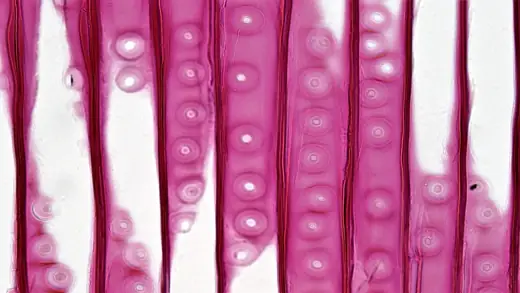

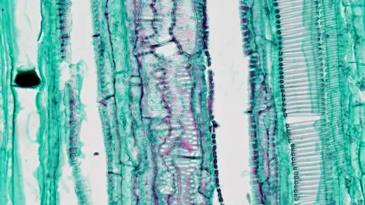

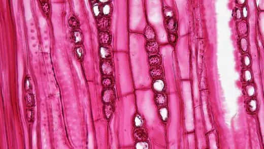
4.2 · низхідна течіяФлоема (луб)
Флоема транспортує органічні речовини, передусім сахарозу, від листків, де вони утворюються, до інших частин рослини: верхівок, коренів, плодів, запасних органів. Оскільки основний напрям — від листків униз, течію називають низхідною, хоча загалом вона йде від «донорів» до «акцепторів» і може бути спрямована вгору. Провідні елементи — живі ситоподібні трубки з члеників, поперечні стінки яких перетворені на ситоподібні пластинки з порами. Зрілі членики не мають ядра, і їхню життєдіяльність підтримують клітини-супутниці з густою цитоплазмою та великим ядром, сполучені з ними численними плазмодесмами.
- Клітини
- живі: ситоподібні трубки + клітини-супутниці
- Транспорт
- органічні речовини (сахароза) з листків
Під мікроскопом

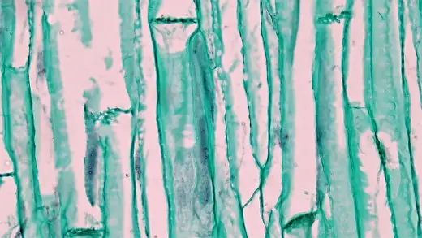

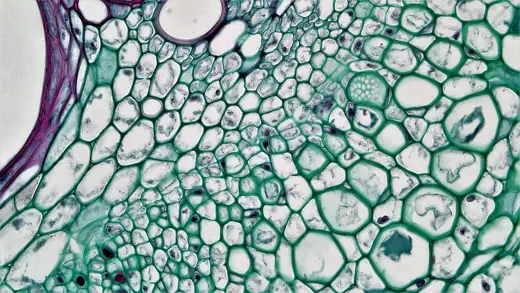

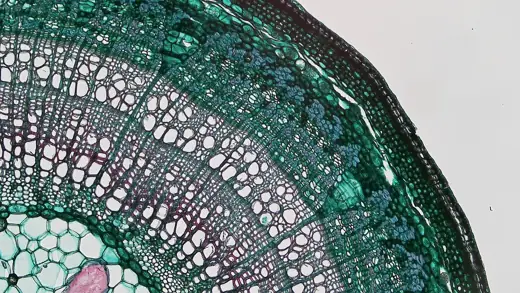
Механічні тканини
Механічні тканини виконують опорну функцію, формуючи «скелет» рослини, що дозволяє витримувати навантаження на розтяг, згин і стиснення. Їхні клітини мають сильно потовщені стінки. Як в інженерних конструкціях, механічні тяжі розміщуються переважно на периферії стебла (опір згину) і в центрі кореня (опір розтягу).
5.1 · живаКоленхіма
Коленхіма — жива тканина з нерівномірно потовщеними целюлозно-пектиновими стінками: потовщення бувають у кутах клітин (кутова), на тангентальних стінках (пластинчаста) або біля міжклітинників (пухка). Стінки не дерев'яніють, тому коленхіма поєднує міцність із пластичністю й забезпечує пружність молодих органів, не заважаючи їм рости в довжину. Вона розташована під епідермою молодих стебел, черешків і жилок листків — наприклад, у ребрах черешків селери чи стеблах гарбуза.
- Клітини
- живі, з протопластом і хлоропластами
- Стінки
- нерівномірно потовщені, не здерев'янілі
Під мікроскопом

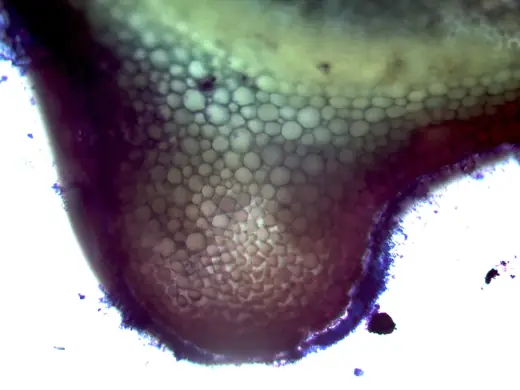

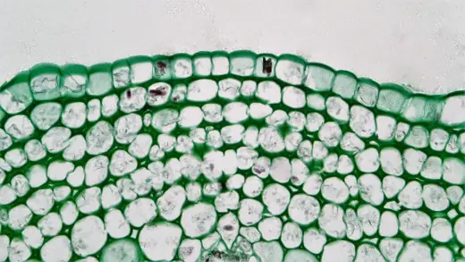

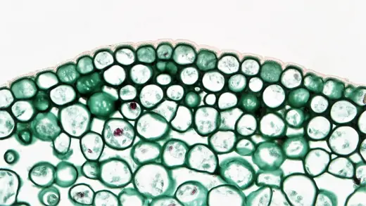
5.2 · мертваСклеренхіма
Склеренхіма — мертва тканина з рівномірно потовщеними, переважно здерев'янілими стінками, яка надає високої міцності зрілим органам. Розрізняють волокна — дуже довгі клітини із загостреними кінцями (луб'яні волокна льону, конопель, джуту; деревні волокна — лібриформ) — та склереїди, або кам'янисті клітини, — короткі, часто округлі, з шаруватими стінками, пронизаними розгалуженими поровими каналами. Склереїди утворюють шкаралупу горіхів, кісточки вишень і слив, «піщинки» в м'якуші груші.
- Клітини
- мертві, з дуже вузькою порожниною
- Стінки
- рівномірно потовщені, здерев'янілі
Під мікроскопом

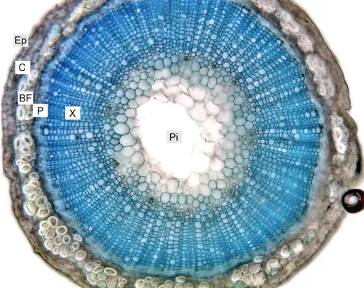

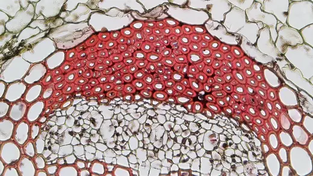

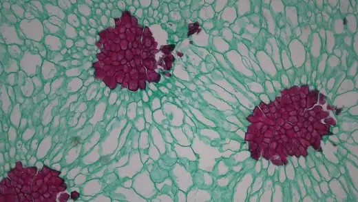
Видільні (секреторні) тканини
Видільні тканини синтезують і виділяють або накопичують специфічні речовини: смоли, ефірні олії, нектар, слиз, латекс, солі. Ці речовини захищають рослину від тварин, грибів і бактерій, загоюють поранення, приваблюють запилювачів, виводять надлишок води та солей. Видільні структури поділяють на зовнішні (на поверхні органів) і внутрішні (у товщі тканин).
6.1Зовнішні
Зовнішні видільні структури утворюються з епідерми. Залозисті волоски складаються з ніжки та головки із секреторних клітин; секрет (ефірна олія, смола) накопичується під кутикулою, яка піднімається пухирцем і легко лопається — тому листки м'яти, меліси чи герані пахнуть при дотику. Нектарники виділяють цукристий нектар, що приваблює запилювачів; вони бувають у квітках і поза ними (на листках, прилистках). До зовнішніх структур належать також жалкі волоски кропиви, гідатоди (виділяють краплі води) та сольові залози.
- Структури
- залозисті волоски, залозки, нектарники, гідатоди
- Приклади
- м'ята, шавлія, кропива, квітки липи
Під мікроскопом і на фото

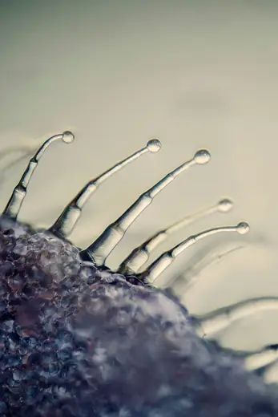

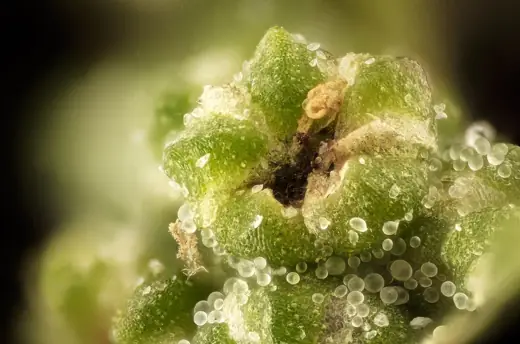
6.2Внутрішні
Внутрішні видільні структури розміщені в товщі органів. Смоляні ходи — видовжені міжклітинні канали, вистелені епітеліальними клітинами, що виділяють смолу; вони характерні для хвойних і захищають від шкідників і грибів, швидко закупорюючи рани. Вмістилища ефірних олій — округлі порожнини (шкірка цитрусових, листки звіробою). Молочники — живі клітини або злиті ряди клітин, заповнені латексом (молочним соком); вони бувають нечленисті (молочай, фікус) і членисті (кульбаба, мак, гевея — джерело натурального каучуку).
- Структури
- смоляні ходи, вмістилища, молочники
- Приклади
- сосна, ялина, цитрусові, молочай, кульбаба
Під мікроскопом

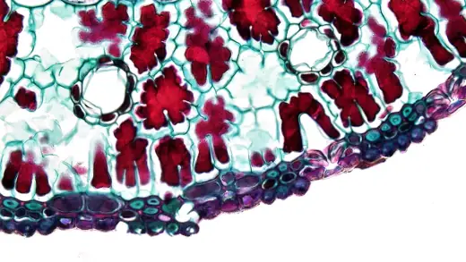
Підсумкова таблиця
Короткий конспект для повторення: стан клітин, ключові ознаки будови та головна функція кожної тканини.
| Тканина | Клітини | Ознаки будови | Функція |
|---|---|---|---|
| Твірні | |||
| Апікальні | живі | дрібні, великі ядра, без міжклітинників | ріст у довжину |
| Латеральні | живі | камбій, фелоген; радіальні ряди клітин | ріст у товщину |
| Інтеркалярні | живі | в основі міжвузлів, тимчасові | вставний ріст |
| Раневі | живі | виникають з паренхіми, калюс | загоєння ран |
| Покривні | |||
| Епідерма | живі | один шар, кутикула, продихи | захист, газообмін, транспірація |
| Перидерма | корок мертвий | суберин, сочевички | захист стебел і коренів |
| Кірка | мертві | шари відмерлої перидерми й лубу | захист стовбура |
| Основні | |||
| Хлоренхіма | живі | хлоропласти, міжклітинники | фотосинтез |
| Запасаюча | живі | крохмальні зерна, краплі олії, білки | запасання речовин |
| Водоносна / аеренхіма | живі | великі вакуолі / великі порожнини | запас води / газообмін |
| Провідні | |||
| Ксилема | мертві (провідні) | трахеїди, судини, лігнін | вода і мінеральні солі вгору |
| Флоема | живі | ситоподібні трубки, клітини-супутниці | органічні речовини з листків |
| Механічні | |||
| Коленхіма | живі | нерівномірні целюлозні потовщення | пружність молодих органів |
| Склеренхіма | мертві | рівномірні здерев'янілі стінки; волокна, склереїди | міцність зрілих органів |
| Видільні | |||
| Зовнішні | живі | залозисті волоски, нектарники | виділення олій, нектару |
| Внутрішні | живі (епітелій, молочники) | смоляні ходи, вмістилища, молочники | накопичення смол, латексу |